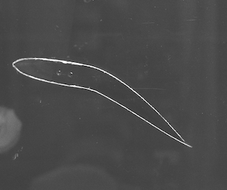
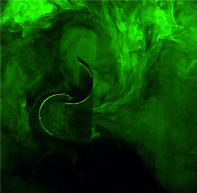
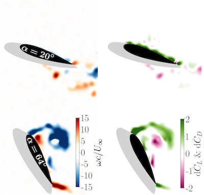
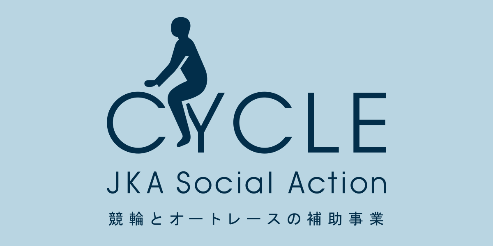
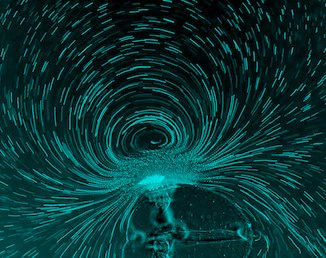
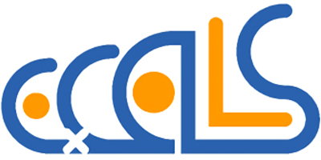

Research
Flow Control
Modern engineering devices such as wind/tidal turbines often suffer from flow separation. Once flow separates from a wing, the wing experiences a sudden drop in lift, which is called stall. This stall phenomenon leads fatigue failure of the blade. We approach these problems from both active and passive flow control techniques. For the former, we use plasma actuators, which has the advantage of considerably light weight and fast actuation. For the latter, we investigate the applications of an adaptive camber aerofoils to various engineering devices. Further, tip vortex from wind and tidal turbines is the cause of erosion and noises. We aim to supress tip vortex through a porous blade tip.
Compos. Struct. (2024) Passively morphing trailing-edge
Phys. Fluids (2024) Passively pitching aerofoil
Collaborators:
Hiroyuki Nishida, Tokyo University of Agriculture and Technology
Akira Oyama, JAXA
Yabin Liu, University of Edinburgh
Marios Kotsonis, Daniele Ragni & Lourenco Tercio Lima Pereira, TU Delft

Wind & Tidal Energy
Renewable energy devices such as wind and tidal turbines are expected to be the main electricity generators to replace fossil fuels. Due to gust, boundary layers, and turbulence, wind/tidal turbines experience inherently unsteady flows. The flow unstediness is known to shorten the life expectancy of the blade due to fatigue fracture, whilst it can also enhance the average power output. We aim to understand the performance of turbines under such conditions. In addition, we apply flow controlling techniques and analytical methods to address those issues.
Phys. Fluids (2024) Savonius turbine in turbulence
Collaborators:
Yuichi Murai & Yuji Tasaka, Hokkaido University
Petr Denissenko, University of Warwick
Wind Power Team, AIST
Funding:

Force estimation from PIV
An accurate non-intrusive force measurement is challenging in some situations where the direct force measurement is not possible such as living animals and flying vehicles. In these conditions, unsteady force estimation from flowfield data is an alternative technique. Classically, control-volume techniques and pressure-field integration have been used. Recently, vorticity-based unsteady force estimation techniques have become more popular in modern aerodynamics where vortices contribute to unsteady forces. The vorticity-based force estimation techniques are attractive because they can clarify how the vortex dynamics (velocity and circulation) affect the forces. We use two methods, one is impulse theory and the other is vortex force map method.
Exp. Fluids (2025) Vortex force map method for snapshot flowfields
Collaborators:
Juan Li, King's College London
Daisuke Noto, University of Pennsisylvania
Funding:

Biological Swimming
We focus on the swimming of Ctenophores (Comb Jellies), which are the sister group to all other animals. From larval stages (~μm) to adult stages (~cm), they use arrays of beating cilia for swimming. Ctenophores are the only kind in animals of centimeter scales that use cilia for swimming. Biologists are interested in why they keep using cilia rather than evolving muscles. To answer this question, we clarify the swimming of Ctenophores of different stages from experimental (optical flow diagnosis) and theoretical approaches.
Collaborators:
Kei Jokura, National institute for Basic Biology
Kamo Aquarium
Funding:

Fundamental Aerodynamics

Unsteady aerodynamics is relevant to many engineering applications such as micro air vehicles, underwater vehicles, wind/tidal turbine blade Aerodynamics/hydrodynamics, and flapping-foil energy harvesters. These applications often experience a massive flow separation, which makes the prediction of forces significantly difficult. The main focus is to accurately predict unsteady forces acting on an unsteady aerofoil/wing characterised by a massively separated flow. We mainly use various theoretical models such as Theodorsen's theory, thin-aerofoil theory, lifting line theory, and impulse theory.
Exp. Fluids (2021) High-amplitude pitching aerofoil
AIAA J. (2022) Unsteady lifting-line theory
Collaborators:
Ignazio Maria Viola, University of Edinburgh
Karen Mulleners, EPFL
Kiran Ramesh, Arizona State University